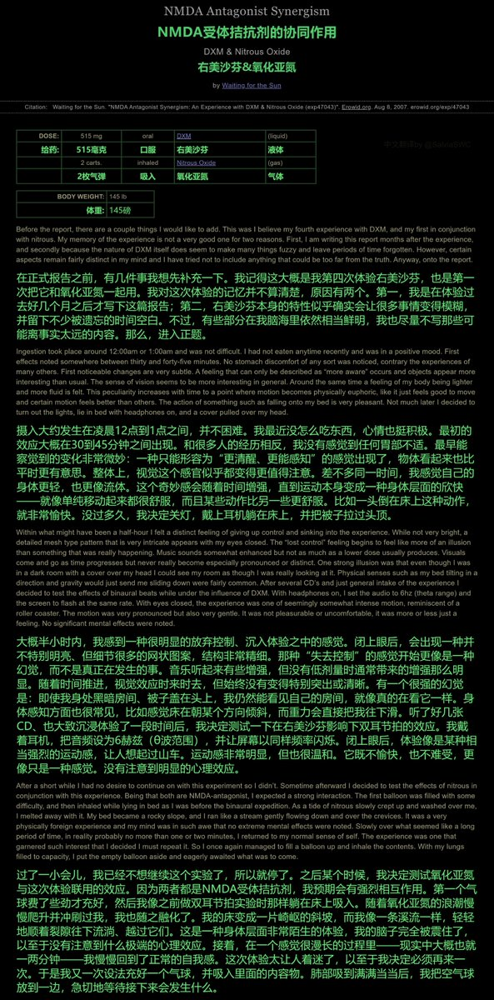
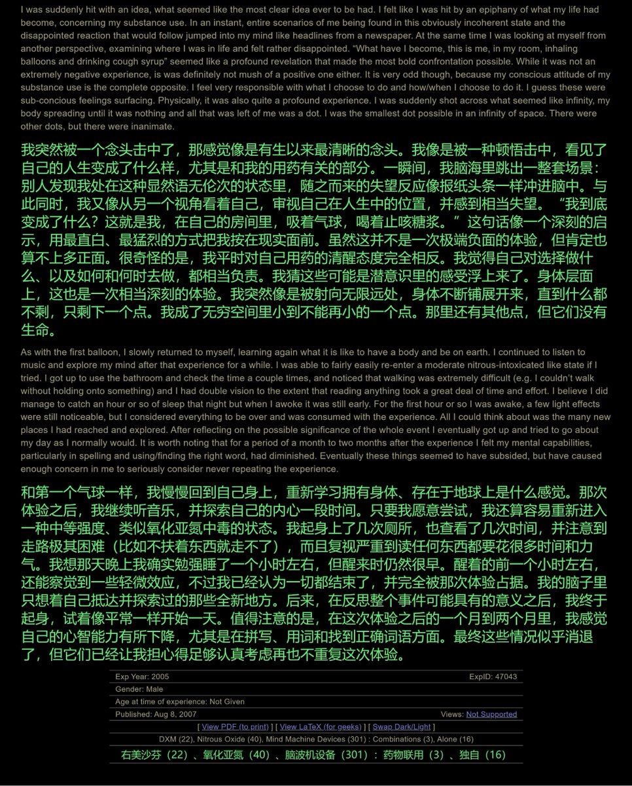
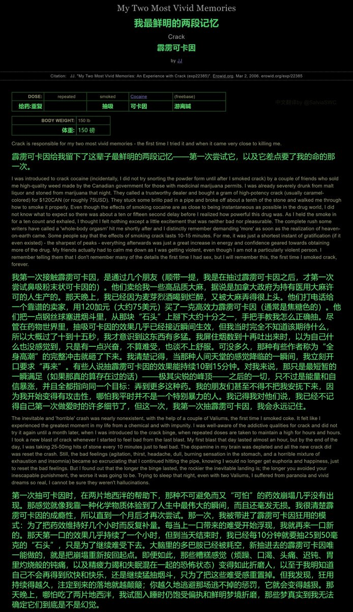
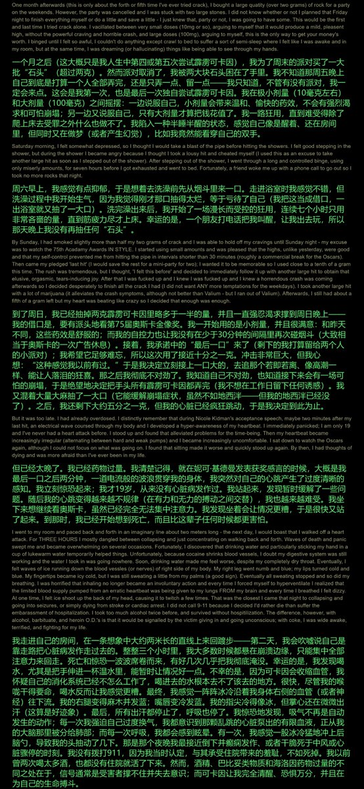
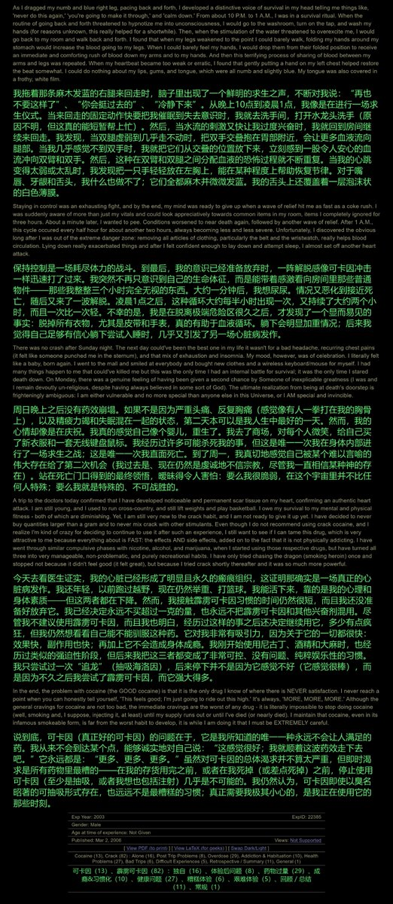

药物报告day10——解离剂联用
作者喝完了一整瓶止咳糖浆，然后吸入笑气，进入了一种强烈的解离幻觉和内省状态。突然，作者平日被压抑的羞耻、失望和恐惧毫无预兆地浮现出来，令人震撼。
我也试过一次右美沙芬+笑气，但是主要是躯体幻觉和麻醉感，没有文中的内省感......难道这是因为窝的觉悟还不够嘛🥺

作者喝完了一整瓶止咳糖浆，然后吸入笑气，进入了一种强烈的解离幻觉和内省状态。突然，作者平日被压抑的羞耻、失望和恐惧毫无预兆地浮现出来，令人震撼。
我也试过一次右美沙芬+笑气，但是主要是躯体幻觉和麻醉感，没有文中的内省感......难道这是因为窝的觉悟还不够嘛🥺





药物报告day9——心脏病发作
吸食可卡因后，作者为了延长亢奋状态，连续多次重复吸食可卡因。最终，作者吸过头了，导致一次心脏病发作，硬撑了过去。然而，在此事过后，作者仍然不愿放弃吸食可卡因，令人感叹
别的不提，我发现不少人认为，用药剂量越大，药效就越强。现在你知道药效副作用也会增强了😢 https://t.co/9c9jF2y6TE https://t.co/jnYZ6nqc5i
吸食可卡因后，作者为了延长亢奋状态，连续多次重复吸食可卡因。最终，作者吸过头了，导致一次心脏病发作，硬撑了过去。然而，在此事过后，作者仍然不愿放弃吸食可卡因，令人感叹
别的不提，我发现不少人认为，用药剂量越大，药效就越强。现在你知道药效副作用也会增强了😢 https://t.co/9c9jF2y6TE https://t.co/jnYZ6nqc5i